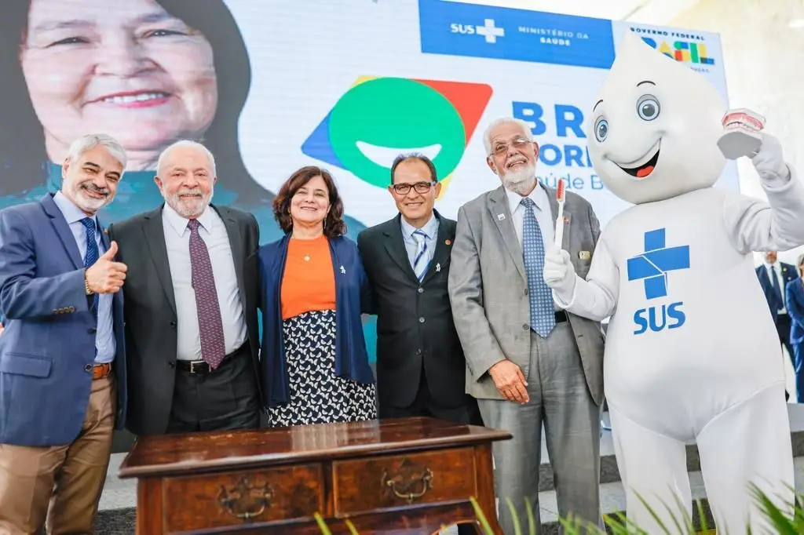

Saúde · Bahia
Gate visual · S47
Agradecimento sóbrio, humano e editorial. O número é memória de confiança; o site volta o olhar para o trabalho que continua.
Cenas estáticas · 1280 + 390 · conteúdo real
Obrigado, Bahia
Obrigado a quem votou, a quem caminhou, a quem compartilhou e a quem acreditou. A eleição terminou; o trabalho continua.
Jorge Solla · Deputado Federal · PT · Bahia
Acompanhe de perto
Notícias, vídeos e registros do trabalho em Brasília e nos municípios.
Nossa história
Da gestão do SUS ao Congresso Nacional, uma trajetória feita ao lado de quem defende saúde, democracia e direitos para todos.
Bandeiras do mandato
Posições construídas em décadas de vida pública, agora renovadas para o quarto mandato.
Financiamento público, piso da enfermagem, vacinação, ciência e atendimento digno.
Institutos federais, universidades e escola pública de qualidade em toda a Bahia.
Salário mínimo valorizado, moradia, agricultura familiar e comida na mesa.
Instituições fortes, liberdade, respeito e combate permanente à desinformação.
Investimento federal e presença do mandato nos municípios e territórios.
Jornada justa, direitos protegidos e trabalho que não adoece.
Perto da Bahia
Obrigado, Bahia
Obrigado a quem votou, a quem caminhou, a quem compartilhou e a quem acreditou. A eleição terminou; o trabalho continua.
Acompanhe o mandatoDeputado Federal · PT · Bahia
Acompanhe de perto
Notícias, vídeos e registros do trabalho em Brasília e nos municípios.
Saúde · Bahia
Ler notícia →
Nossa história
Da gestão do SUS ao Congresso Nacional, uma trajetória feita ao lado de quem defende saúde, democracia e direitos para todos.
Bandeiras do mandato
Posições construídas em décadas de vida pública, agora renovadas para o quarto mandato.
Financiamento público, piso da enfermagem, vacinação, ciência e atendimento digno.
Institutos federais, universidades e escola pública de qualidade em toda a Bahia.
Salário mínimo valorizado, moradia, agricultura familiar e comida na mesa.
Instituições fortes, liberdade, respeito e combate permanente à desinformação.
Investimento federal e presença do mandato nos municípios e territórios.
Jornada justa, direitos protegidos e trabalho que não adoece.
Perto da Bahia
Deputado Federal · PT · Bahia
Mais Saúde, Mais Futuro.
Artigos
Fotos
Privacidade
Instagram
YouTube
Facebook
Jorge José Santos Pereira Solla · Deputado Federal · Partido dos Trabalhadores · Bahia
Deputado Federal · PT · Bahia
Mais Saúde, Mais Futuro.
Navegue
Artigos
Fotos
Privacidade
Redes
Instagram
YouTube
Facebook
Jorge José Santos Pereira Solla · Deputado Federal · Partido dos Trabalhadores · Bahia
Acompanhe de perto
As notícias do mandato aparecerão aqui assim que forem publicadas.
Perto da Bahia
Novos registros do trabalho na Bahia serão publicados em breve.